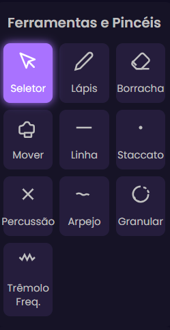
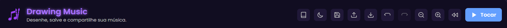

Manual Drawing Music
Liberte o artista e o músico que há em si. Este guia detalha cada ferramenta, conceito e truque para que possa dominar o Drawing Music e criar composições incríveis.
1. Conceitos Fundamentais: Como o Som é Desenhado
Antes de começar, é crucial entender a lógica da nossa pauta musical.

- O Eixo do Tempo (Horizontal): A régua no topo representa o tempo da sua música, medido em segundos. Quanto mais à direita você desenha, mais tarde o som irá tocar.
- O Eixo da Frequência (Vertical): A régua à esquerda representa a frequência do som, ou seja, a nota musical. Desenhos na parte inferior da pauta produzem sons graves, enquanto desenhos na parte superior produzem sons agudos. Esta escala é logarítmica, imitando a forma como o ouvido humano percebe as notas.
2. As Ferramentas Criativas
A barra lateral é o seu arsenal. Cada ferramenta oferece uma forma diferente de criar ou manipular som.
Ferramenta Seletor: O Seu Bisturi de Edição
Esta é a ferramenta mais poderosa para refinar a sua composição. Um bom domínio do Seletor irá acelerar drasticamente o seu trabalho.
- Seleção Individual e Múltipla: Clique para selecionar um elemento. Mantenha
Ctrl(ouCmd) para adicionar mais elementos à sua seleção, permitindo a edição em grupo. - Seleção em Área: Clique numa área vazia e arraste. Um retângulo aparecerá, selecionando tudo o que tocar.
- Manipulação Direta:
- Mover: Arraste uma seleção para a reposicionar no tempo e na frequência.
- Redimensionar: Arraste as alças (os quadrados nos cantos e lados) para aumentar ou diminuir o tamanho da sua seleção. Isto afeta a duração e a variação de notas de um desenho.
Dica Pro: Após criar uma batida ou melodia curta, use o Seletor para a copiar (
Ctrl+C) e colar (Ctrl+V) várias vezes, criando um loop ou padrão rítmico rapidamente.
Ferramentas de Desenho e Edição
- Lápis: Ideal para melodias expressivas e linhas fluidas. A sua forma livre permite criar vibratos subtis (ondulando a linha) ou subidas e descidas rápidas de nota.
- Linha Reta: A ferramenta para glissandos (deslizar suavemente entre duas notas) e notas sustentadas.
- Endireitar: Selecione um traço feito a lápis e clique neste botão para o transformar numa linha reta perfeita. Útil para corrigir imperfeições ou transformar uma melodia num glissando.
- Borracha: Apague erros sem afetar o resto da sua criação.
- Mão (Mover): Navegue pela pauta sem risco de editar algo acidentalmente. Use o scroll do rato para navegar na horizontal e
Shift + Scrollpara navegar na vertical.
Pincéis Especiais: Adicione Caráter
Estes pincéis inserem "eventos sonoros" pré-definidos com um só clique. São ideais para ritmo e ornamentação.
- Staccato: Cria uma nota curta e picada. Ótima para ritmos pontuados.
- Percussão: Adiciona um som de batida sem nota definida. Use vários em sequência para criar uma linha de bateria.
- Arpejo: Toca as notas de um acorde rapidamente, uma após a outra. Adiciona um toque melódico e harmonioso.
- Nuvem Granular: Gera uma "textura" sonora, desconstruindo o som em pequenos grãos. Ideal para criar ambientes e atmosferas.
- Trêmolo: Produz uma rápida repetição da mesma nota, criando um efeito de vibração.
3. Esculpindo o Som: Estilo, Efeitos e Timbres
O som não é apenas a nota e a duração. É a cor, a textura e o ambiente. É aqui que você se torna um verdadeiro designer de som.

Estilo e Equalizador Global
- Cor e Espessura: Defina o aspeto visual e, mais importante, o volume base de um som. Linhas mais espessas resultam num som com mais presença.
- Equalizador Global (EQ): Pense nisto como o controlo de tom mestre do seu sistema de som. Afeta toda a música. Se a sua composição soa "lamacenta", experimente cortar um pouco os Graves. Se soa "abafada", aumente os Agudos.
Efeitos: O Seu Estúdio Virtual
Os efeitos são aplicados aos elementos que você selecionou. Permitem transformar um som simples em algo complexo e profissional.
- Reverb: Adiciona a sensação de espaço. Um pouco de reverb pode fazer a sua música soar menos "seca" e mais natural.
- Delay: Cria ecos. Útil para efeitos rítmicos ou para dar uma sensação de profundidade.
- Filtros (Passa-Baixo, Passa-Alto, etc.): Ferramentas poderosas para esculpir o som. Um filtro Passa-Baixo (Low Pass) remove as frequências agudas, tornando o som mais suave e abafado.
- Modulação (Chorus, Phaser, Flanger): Adicionam movimento e complexidade. O Chorus, por exemplo, duplica o som com uma ligeira desafinação, dando a impressão de vários instrumentos a tocar juntos.
Estado Misto: Se selecionar dois elementos, um com reverb e outro sem, o slider de Reverb ficará cinzento. Mover o slider aplicará o novo valor a ambos os elementos, unificando a configuração.
Timbres: A Identidade do Som
O timbre é a "personalidade" do som. O Drawing Music oferece uma paleta de timbres de sintetizador clássicos para o seu Lápis e Linha.
- Sine (Senoide): O som mais puro e suave, como uma flauta. Ótimo para baixos e melodias limpas.
- Square (Quadrada): Um som mais "oco" e eletrónico, reminiscente de videojogos antigos.
- Sawtooth (Dente de Serra): Um som brilhante e "áspero", cheio de harmónicos. Perfeito para leads e sons agressivos.
4. O Cabeçalho: Controlos Globais e de Navegação
A barra no topo da aplicação contém todas as ferramentas para gerir o seu projeto, a visualização e a reprodução.
Gestão de Ficheiros
- Salvar Projeto (
.drawmus): A opção mais importante. Guarda todo o seu trabalho num ficheiro que pode ser reaberto e editado mais tarde. Crie o hábito de salvar com frequência! - Importar Projeto: Carrega um ficheiro
.drawmusque você ou outra pessoa criou. - Exportar:
- JPG: Uma "fotografia" da sua pauta, ideal para partilhar visualmente.
- PDF: Um documento de alta qualidade da sua composição, paginado se for muito longa.
- WAV: A sua música num ficheiro de áudio de alta qualidade. As alças na régua de tempo definem o trecho a ser exportado.
Histórico e Visualização
- Desfazer (
Ctrl+Z) e Refazer (Ctrl+Y): Os seus melhores amigos para experimentar sem medo. Volte atrás ou avance nas suas ações. - Zoom In/Out (
Ctrl+/-): Aproxime para editar detalhes ou afaste para ter uma visão geral da estrutura da sua música. - Resetar Visualização: Perdeu-se na pauta? Clique neste botão (setas duplas) para regressar instantaneamente ao início (tempo 0) e com o zoom padrão.
- Alternar Tema (Sol/Lua): Alterne entre os modos claro e escuro para maior conforto visual, seja de dia ou de noite.
Controlo de Reprodução
- Tocar/Parar (
Barra de Espaço): O botão principal para ouvir a sua criação. - Linha de Reprodução (Playhead): A linha vertical que percorre a pauta enquanto a música toca não é apenas um indicador. Você pode clicar e arrastá-la para qualquer ponto da música e começar a tocar a partir daí. É perfeito para ensaiar uma secção específica.